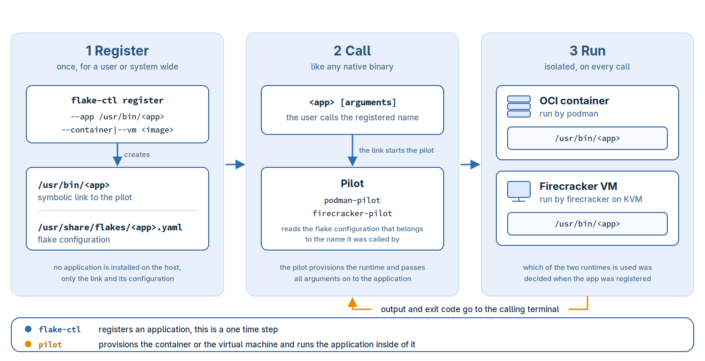

Flake Pilot User Guide
Application Isolation - Secure Execution with a Native Feel
Flake Pilot registers, provisions and launches applications that are not installed on your host but are provided inside a runtime environment such as an OCI container or a Firecracker virtual machine. The registered application behaves like any other program on the system: it is called by its name, it reads and writes the data you point it to, and it returns its exit code to your shell. Everything that is needed to run it, the image, the engine and the provisioning of the instance, is handled behind that name.
An application registered this way is called a flake.

About This Guide
This guide is written for administrators and developers who want to
provide isolated applications on a Linux host. It explains the
concepts behind flakes, shows how to register applications for the
podman and firecracker engines, describes the network setup
for virtual machines and documents the layout of the flake
configuration.
The guide is organized as follows:
Introduction explains what Flake Pilot is, which components it consists of and which problems it solves.
Installation describes how to install the packages or how to build the project from source.
Getting Started prepares the host and registers a first application.
Applications From a Container covers applications provided by OCI containers, including delta containers and layered setups.
Applications From a Virtual Machine covers applications provided by Firecracker virtual machines.
Firecracker Networking explains how a virtual machine is connected to the outside world.
Firecracker Volumes explains how a local host path is shared with a virtual machine over NFS.
Application Setup documents the registry layout, the flake configuration and the tools to inspect a running setup.
How To Build Your Own App Images points to ways of building your own application images.
Troubleshooting and Known Issues collects known issues and the switches which help to analyze them.
The command line of each tool is documented in the manual pages
shipped with the packages, e.g man 8 flake-ctl or
man 8 podman-pilot. This guide references them where the details
matter.
Resources
Source code and issue tracker: https://github.com/OSInside/flake-pilot
Packages: https://build.opensuse.org/package/show/Virtualization:Appliances:Builder/flake-pilot
Manual pages: https://github.com/OSInside/flake-pilot/tree/main/doc
Feedback is very much welcome.